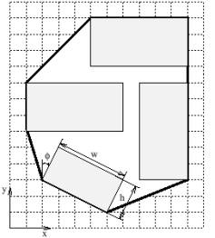

Problem B
Board Wrapping
Input: standard input
Output: standard output
Time
Limit: 2 seconds

The small sawmill
in Mission, British Columbia, has developed a brand new way of packaging boards
for drying. By fixating the boards in special moulds, the board can dry
efficiently in a drying room.
Space is an issue though. The boards cannot be too close, because then the drying will be too slow. On the other hand, one wants to use the drying room efficiently.
Looking at it from
a 2-D perspective, your task is to calculate the fraction between the
space occupied by the boards to the total space occupied by the mould. Now, the
mould is surrounded by an aluminium frame of negligible thickness, following
the hull of the boards' corners tightly. The space occupied by the mould would
thus be the interior of the frame.
On the first line of input there is one integer, N <= 50, giving the number of test cases (moulds) in the input. After this line, N test cases follow. Each test case starts with a line containing one integer n, 1< n <= 600, which is the number of boards in the mould. Then n lines follow, each with five floating point numbers x, y, w, h, j where 0 <= x, y, w, h <=10000 and –90° < j <=90°. The x and y are the coordinates of the center of the board and w and h are the width and height of the board, respectively. j is the angle between the height axis of the board to the y-axis in degrees, positive clockwise. That is, if j = 0, the projection of the board on the x-axis would be w. Of course, the boards cannot intersect.
For every test
case, output one line containing the fraction of the space occupied by the boards
to the total space in percent. Your output should have one decimal digit and be
followed by a space and a percent sign (%).
|
1
4 4
7.5 6 3 0 8
11.5 6 3 0 9.5
6 6 3 90 4.5
3 4.4721 2.2361 26.565 |
64.3 % |
Swedish National Contest
The Sample Input and
Sample Output corresponds to the given picture